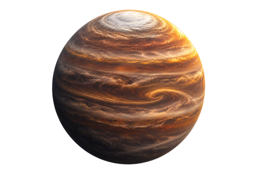
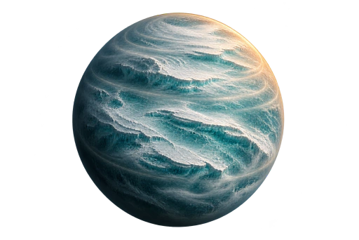
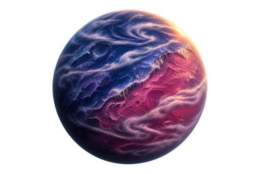
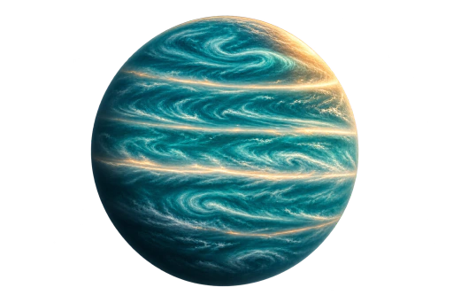
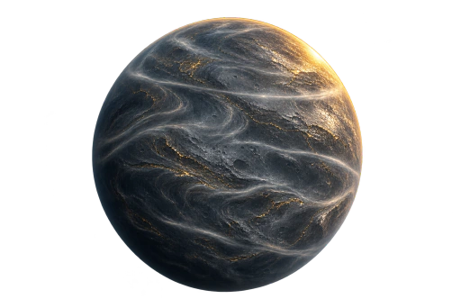

Repository linked
WBench
Evaluation code and benchmark resources for interactive video world models.
meituan-longcat/WBenchFudanCVL Robotics / OPEN RESEARCH
A home for the code behind our research.
Repository linked
Evaluation code and benchmark resources for interactive video world models.
meituan-longcat/WBenchThese projects have preview pages. Their individual repositories have not been linked on this site.

World Models · Project Preview
Exploring memory, consistency, and control across longer world-model interactions.

Robotics · Project Preview
A research direction for evaluating embodied interaction and physical consequences.

World Models · Project Preview
Connecting richer interaction settings with a more diagnostic evaluation picture.

Agents · Concept Preview
An illustrative project on agents that act, observe, and revise their plans.

Agents · Concept Preview
A concept for studying agent behavior across realistic, multi-step tasks.

Agents · Concept Preview
Exploring how agents could retain useful context without carrying every past detail.

Vision · Concept Preview
An illustrative direction for precise visual editing with stable surrounding context.

Vision · Concept Preview
An illustrative direction for reasoning about actions, entities, and causal change in video.

Tools · Concept Preview
A tooling concept for connecting actions, observations, and evaluation evidence.